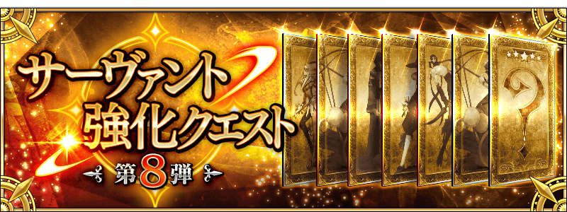
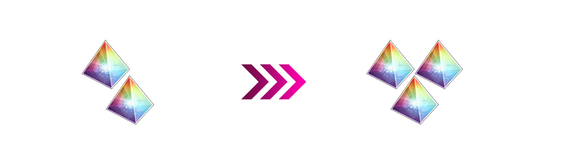

◆開始時間◆
2018年2月下旬預定
◆宣傳活動概要◆
自2018年2月下旬舉辦「1200萬DL突破宣傳活動」！
在下述先行介紹宣傳活動的一部份情報！

舉辦強化Servant能力的特別關卡「Servant強化關卡第8彈」。
本次做為恆常新追加共7位Servant的強化關卡！
對象Servant和強化的詳細會在日後刊載，敬請期待！
在每週更新的常設任務「Master任務」可獲得的聖晶片，從2個增量至3個，宣傳活動結束後也恆常化。
通過每週7個的Master任務，可得到最大21個(聖晶石3個份)的聖晶片！

關於已開放的所有靈衣，靈衣穿著中的戰鬥時語音會變更成專用語音！
※語音變更成專用語音只限穿著靈衣的情況。
※請注意寶具演出時的語音及一部份的語音並無變化。
◆靈衣專用語音變更Servant一覧◆
| Servant名 | 靈衣的名稱 | |
|---|---|---|
| 瑪琇・基利艾拉特 | 「常夏的泳裝」 | |
| 女王梅芙 | 「魅惑的獄長樣式」 | |
| 尼祿・克勞狄烏斯(Saber) | 「奧林匹亞的體操服」 | |
| 帕爾瓦蒂 | 「少女的找尋物」 | |
| 阿斯托爾福 | 「於圖利法斯的回憶」 | |
| 貞德〔Alter〕 | 「邪龍之魔女ver新宿1999」 | |
※只有女王梅芙是變化成在期間限定活動「Death Jail・夏日逃脫 ～罪與絶望的梅芙大監獄2017～」做為敵人登場「魅惑的獄長樣式」的寶具演出時語音。
另外，追加戰鬥動作翻新前除了寶具演出時語音以外的戰鬥時語音。
其他還有準備著豪華宣傳活動內容，敬請期待！